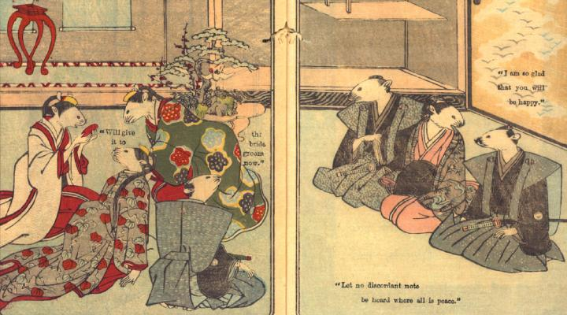

花嫁が三三九度の盃を飲み干している。付き添いの女鼠たちがそれを見守っている。親族たちは、それを見て喜んでいる。
著作者：David Thompson／出典：親書誌：U426_nichibunken_0112：Nedzumi no Yome-Iri／日付：2006／資源識別子：U426_nichibunken_0112_0009_0000
Copyright (c)2010- International Research Center for Japanese Studies, Kyoto, Japan. All rights reserved.